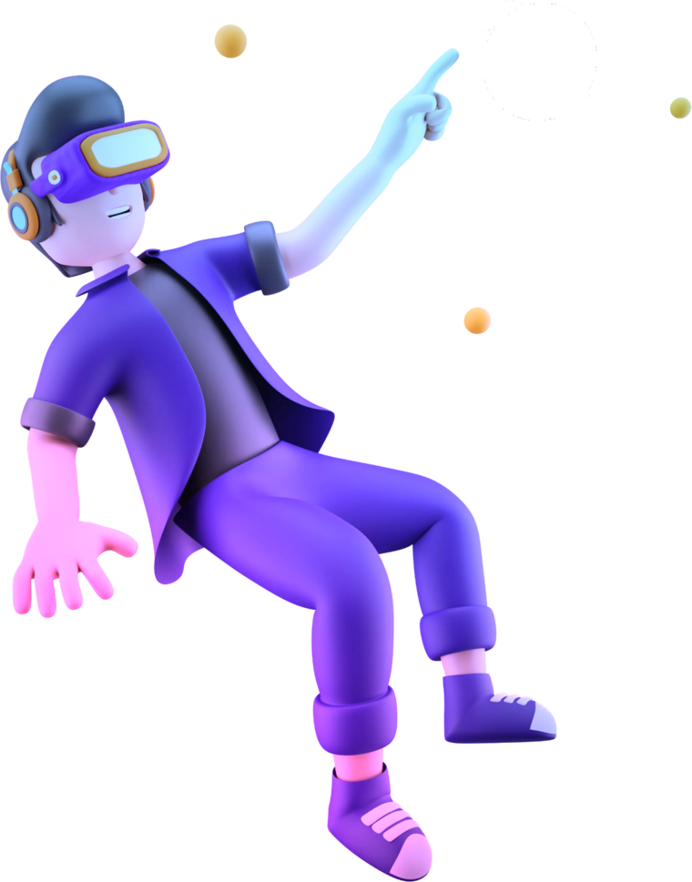
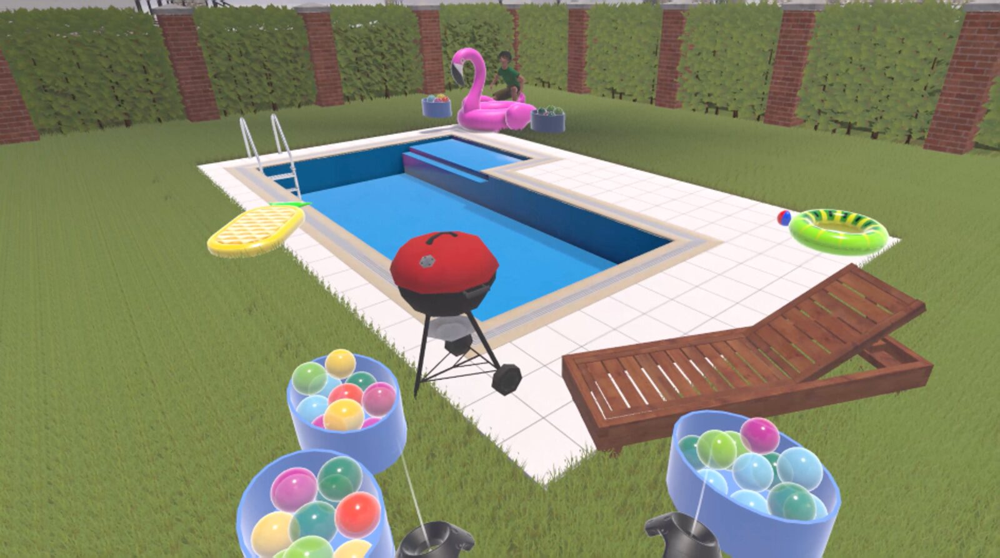
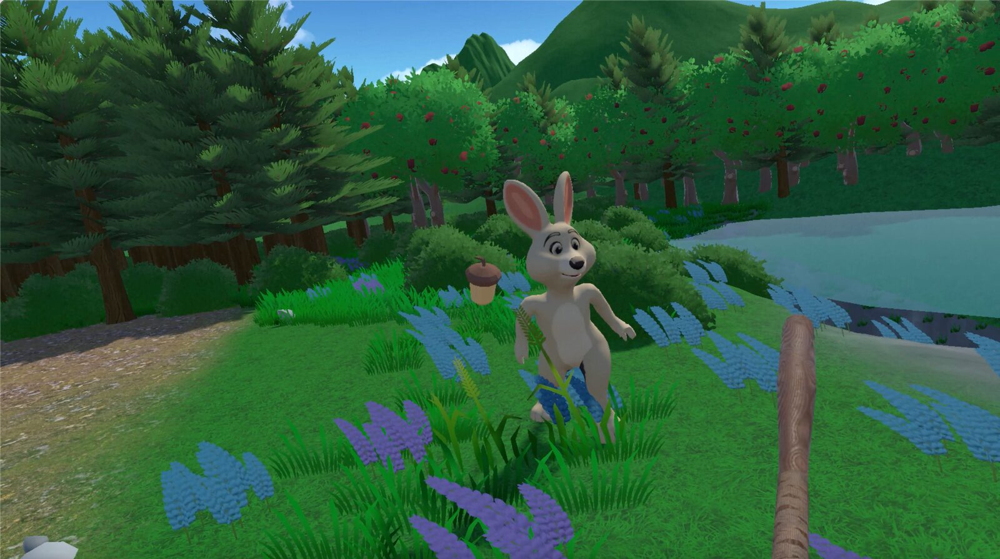

Can a virtual environment elicit PLAY?
Three virtual reality environments built to invoke Panksepp's PLAY emotion system, each tested with 25 participants. A 2026 Computer Science honours project at the University of Cape Town.

What PLAY is, and why it matters
PLAY is the highly pleasurable, fast-paced series of back-and-forth interactions between two or more beings. In Panksepp's affective neuroscience it is one of seven primary emotion systems, and it can be generalised to social joy.
PLAY supports social and cognitive development, and reduced play is linked to conditions such as depression and ADHD. A virtual environment that reliably elicits PLAY could support both research and therapy, yet to our knowledge no prior work has used VR to target it.
Objectives
- Decompose the definition of PLAY into measurable components so that elicitation can be triangulated.
- Propose an affective virtual environment design framework intended to support PLAY elicitation.
- Create and evaluate three virtual environments designed to elicit PLAY.
The three environments
Each team member designed, built and evaluated one environment. The seven parts of PLAY we measured are shown for each; a filled mark means the part was met, a half mark means it was partly met, and an empty mark means it was not met. Each environment's page gives the full results.
-

Apple Interaction
Zenande Mdludlu
A woodland meadow where players freely throw and catch apples with an NPC squirrel whose mood-driven finite state machine controls its behaviour, such as offering, chasing and evading, and its expressions.
2 of 7 parts met
- Valence (partly met)
- Arousal (partly met)
- Dominance (not met)
- Reciprocity (met)
- Sociality (not met)
- Joy (partly met)
- PLAY (met)
-

Water Balloon Fight
Devin Marais
A water balloon fight across a backyard pool with a boy NPC that matches the player's throwing skill, so play passes through winning, losing and fair phases.
3 of 7 parts met
- Valence (partly met)
- Arousal (not met)
- Dominance (not met)
- Reciprocity (not met)
- Sociality (met)
- Joy (met)
- PLAY (met)
-

Bunny Rally
Karla Alaro
A bat and ball interaction with a humanoid bunny in a forest, where the bunny throws an acorn and the player hits it back.
2 of 7 parts met
- Valence (partly met)
- Arousal (not met)
- Dominance (partly met)
- Reciprocity (met)
- Sociality (met)
- Joy (partly met)
- PLAY (not met)
How we tested each environment
Each environment was evaluated in a within-subjects user study with 25 participants. Participants completed questionnaires at three points: before a tutorial environment, after the tutorial, and after the affective environment. The post-tutorial reading acts as the control, so a change between the second and third readings is attributed to the environment itself.
| Part of PLAY | Instrument |
|---|---|
| PLAY | Affective Neuroscience Personality Scales (ANSS) |
| Valence (high pleasure) | Self-Assessment Manikin (SAM), valence |
| Arousal (fast-paced) | Self-Assessment Manikin (SAM), arousal |
| Dominance (responsiveness) | Self-Assessment Manikin (SAM), dominance |
| Reciprocity | Co-presence scale |
| Sociality | Social presence scale |
| Joy | PANAS-X, joviality subscale |
Presence was measured with the IPQ, and in-session behaviour was logged as telemetry.
What we found
Across all three environments, the framework produced pleasant, positive and socially engaging experiences. No environment met every part of the PLAY definition, so this is partial but promising evidence that PLAY can be elicited in VR.
Future work should
- Measure physiological data to corroborate self-reported arousal.
- Recruit a larger, more diverse sample for statistical power and generalisability.
- Hold a VR familiarisation session before the main session to reduce novelty effects.
- Ensure the tutorial environment is affectively neutral.
Project documents
Documents produced jointly by the team. Each environment's page links the documents for that environment.
| Document | Format |
|---|---|
| Project poster | |
| Project proposal file to be added | |
| Final presentation file to be added |